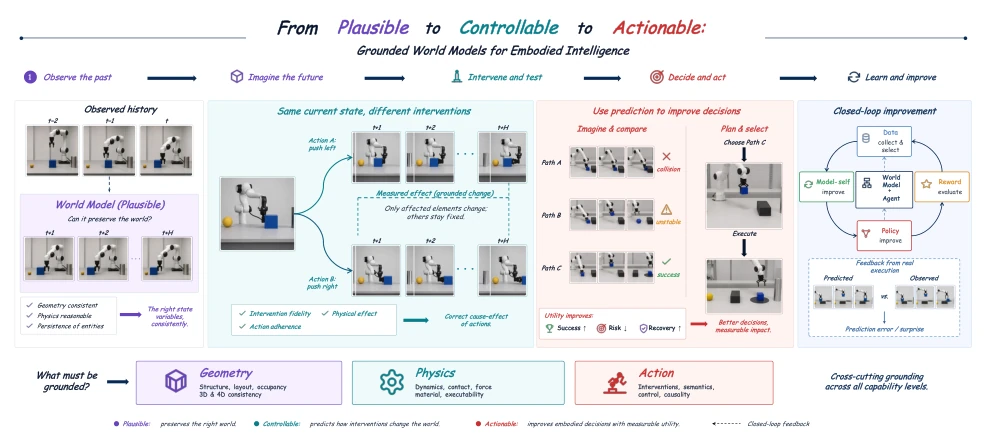
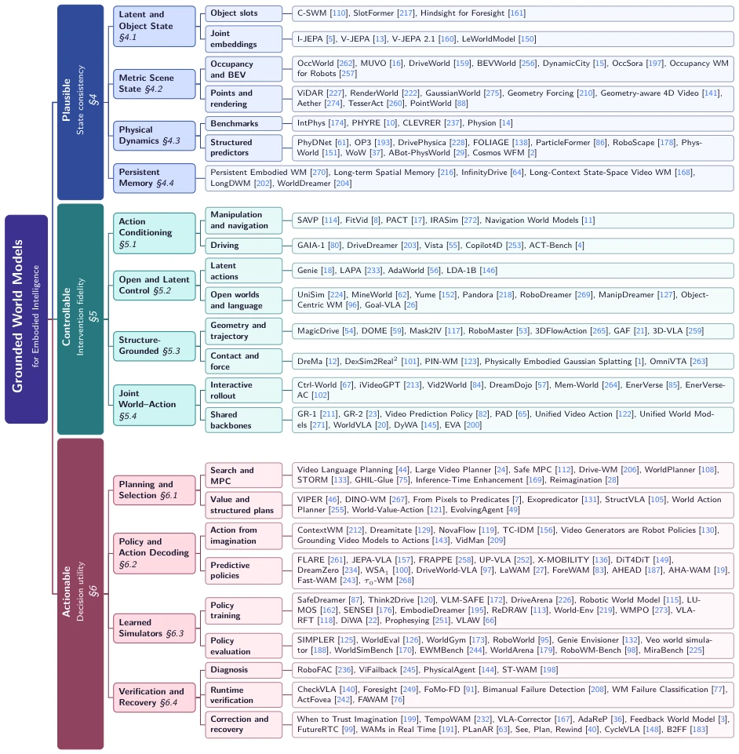
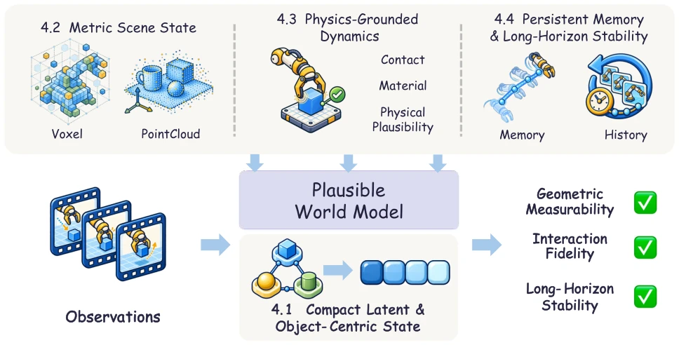
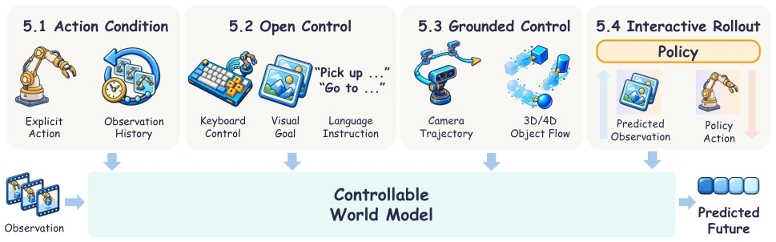
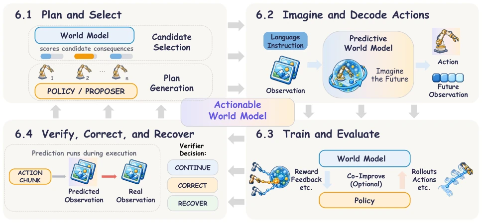

This review acts as a wake-up call for the "World Models" industry, severely critiquing models that merely generate realistic but illogical "cyber videos". The author's proposed three-level ladder of "Plausible (Plausible)-Controllable (Controllable)-Actionable (Actionable)" is simply a dimensional reduction attack on the current academic trend of "generating for the sake of generating". It sharply points out that generating a realistic image of a coffee cup does not imply the model knows the cup's weight, nor does it imply it can plan a grasping path. This paradigm shift from "visual fidelity" to "decision utility", while logically rigorous, changes the evaluation standard from "does it look like" to "can it work", undoubtedly posing a difficult challenge for those experts who only chase PSNR/SSIM metrics. However, the article's definition of "Actionable" is too idealistic; in reality, many models have not even mastered "Controllable" yet, yet they rush to discuss "decision gain", which is simply a castle in the air.
Current embodied AI research faces a core contradiction: existing World Models are often hijacked by the realism of visual generation, yet ignore their essential value as decision support tools. Many works such as [51] (Deep Visual Foresight) and [68] (World Models) demonstrate predictive capabilities, but lack explicit maintenance of task-relevant states (such as physical constraints, geometric relationships), leading to prediction results that "look right but are useless in practice". More seriously, existing reviews are mostly classified by architecture or modality, failing to answer the key question of "which predictive capability truly enhances behavior". For example, [180] and [266] focus on VLA architectures, but do not distinguish whether the prediction models possess intervention causality; [155] focuses on the application of video generation in robotics, but ignores the contribution of non-video form prediction states (such as physical variables) to decision-making. The absence of such an evaluation system causes a large amount of research to remain in the "generative hallucination" stage, unable to truly solve challenges such as long-horizon planning, uncertainty calibration in contact-rich environments, and cross-embodiment transfer.

Figure 1 Overview of this survey paper. The framework is illustrated through a robotic-manipulation example. Starting from observed history, Plausible models preserve task-relevant states. Controllable models predict how interventions change the environment, while Actionable models use these predictions to improve decisions with measurable utility. Geometry, physics, and action ground all three levels. Feedback from real execution supports the closed-loop improvement of data, rewards, policies, and the world model itself.
The paper constructs a unified "Capability Ladder" framework, dividing World Models into three progressive levels: Plausible, Controllable, and Actionable.
1. **Plausible Layer**: The core is maintaining spatiotemporal, geometric, or physical structural consistency relevant to the task. The model needs to predict future states, ensuring object identity, spatial layout, and physical laws (such as collision, support) do not drift over time. This includes compact latent states (such as [110] C-SWM), metric scene states (such as [262] OccWorld), and persistent memory mechanisms.
2. **Controllable Layer**: On the basis of Plausibility, the model must correctly respond to interventions. That is, when different actions are input (such as push left or push right), the predicted future states should produce differentiated changes consistent with physical causality. This requires the model to possess action-conditioned prediction capabilities, able to distinguish the impact of different interventions on geometric, physical, and semantic states, rather than merely generating random changes.
3. **Actionable Layer**: This is the highest level, requiring predictions to be converted into quantifiable decision gains. The model needs to directly serve planning, policy learning, evaluation, or recovery. For example, using predictions for path search ([108] WorldPlanner), decoding actions from imagination ([261] FLARE), serving as a training simulator ([173] WorldGym), or performing verification and error correction at runtime ([140] CheckVLA).
Additionally, the paper proposes a 3x4 "Grounding-Improvement Matrix", combining three grounding dimensions (geometry, physics, action) with four loops (data, reward, policy, model self-improvement), systematically analyzing how predictions specifically affect the closed-loop optimization of embodied AI systems.

Figure 2 Taxonomy of grounded world models for embodied intelligence. Each coloured spine is one rung of the capability ladder, the first tinted column its subsections, the second a thematic group, and the pale cards representative works of that group. Each reference in this figure appears once under a primary narrative role; placement does not certify that all capability requirements have been tested. The rungs are cumulative: Plausible requires task-relevant state consistency over the tested horizon and conditions; Controllable adds correct grounded effects of paired interventions; Actionable adds a measured decision gain under matched budgets.

Figure 3 Plausible World Model. Starting from observations, prediction moves from compact latent or object- centric states (Section 4.1) to metric scene representations such as voxel grids and point clouds (Section 4.2), then to dynamics constrained by contact and material response (Section 4.3), and finally to persistent memory and long-horizon state consistency (Section 4.4). These additions progressively make geometry, interaction feasibility, and persistence testable. The progression is conceptual rather than chronological, and the illustrated representations are examples rather than components required in every model.

Figure 4 Controllable World Model. Starting from observations, control moves from fixed action conditioning with explicit commands and history (Section 5.1) to open, latent, and language-specified interventions such as keyboard inputs, target images, and instructions (Section 5.2), then to grounded controls expressed in measurable geometric or physical variables, such as camera trajectories (Section 5.3), and finally to policy-driven interactive rollouts and models that couple future prediction with action generation (Section 5.4). These stages progressively widen the control set, make intervention fidelity testable, and connect future prediction with action generation. The progression is conceptual rather than chronological, and the illustrated controls are examples rather than components

Figure 5 Actionable world models. Each quadrant is one stage of Section 6, the central card the capability being established, and the grey connectors the clockwise reading order rather than runtime data flow. In Section 6.1 a proposer supplies candidate behavior and predicted consequences support selection; in Section 6.2 imagined futures or predictive features support action decoding; in Section 6.3 a learned simulator supplies rollouts and feedback for policy training or evaluation; and in Section 6.4 predicted and observed execution are compared to continue, correct, or recover. The stages represent alternative placements of prediction in the decision process rather than a mandatory closed pipeline, and an Actionable claim requires a measured downstream gain over a matched baseline.
As a review, this paper does not have a traditional "Experiments" section, but validates the effectiveness of its framework by systematically organizing and classifying existing literature. The authors map a large number of representative works (such as [69] Dreamer, [177] MuZero, [262] OccWorld, [108] WorldPlanner, etc.) into the capability ladder and matrix they proposed, demonstrating the technical evolution path from passive generation to active decision-making. By comparing methods across different domains (manipulation, navigation, driving), the article reveals common shortcomings in current research regarding long-horizon consistency, causal intervention testing, and uncertainty calibration. The evaluation protocol section proposes a set of benchmark design principles aligned with capabilities, emphasizing that "intervention fidelity" and "decision utility" must be tested, rather than just looking at visual reconstruction error. This "theoretical experiment" powerfully proves the limitations of existing evaluation systems (such as focusing only on video generation quality) and points out gaps that need to be filled in the future, such as cross-embodiment transfer and real-time recovery mechanisms.